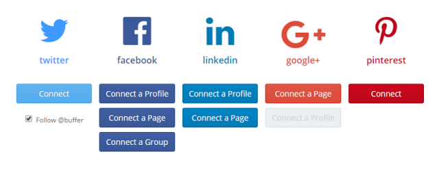
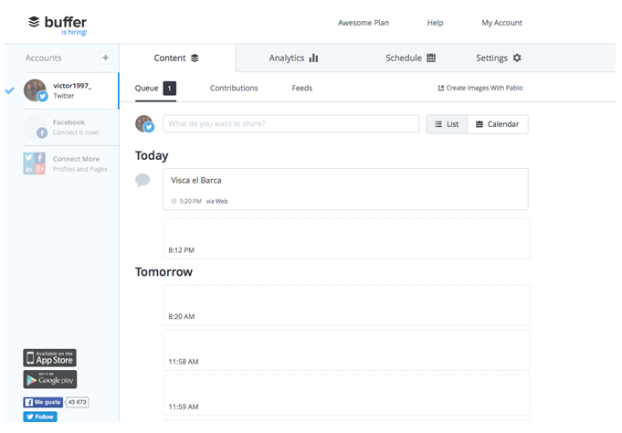
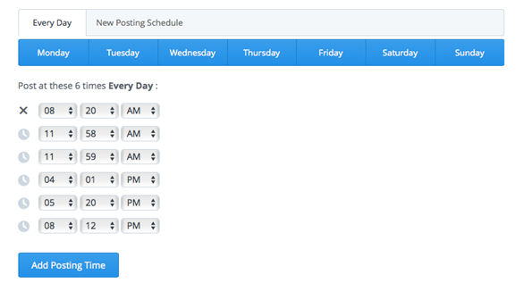

Buffer
Esta aplicación podrá:
- Leer Tweets de tu cronología.
- Ver a quién sigues y seguir a nuevas personas.
- Actualizar tu perfil.
- Publicar Tweets por ti.
- Acceder a tus mensajes directos.
- En esta imagen se ve las redes sociales se pueden manejar con buffer

- Para programarlas en los días

- Para programarlas en los días

- Vincula tus redes sociales en YouTube